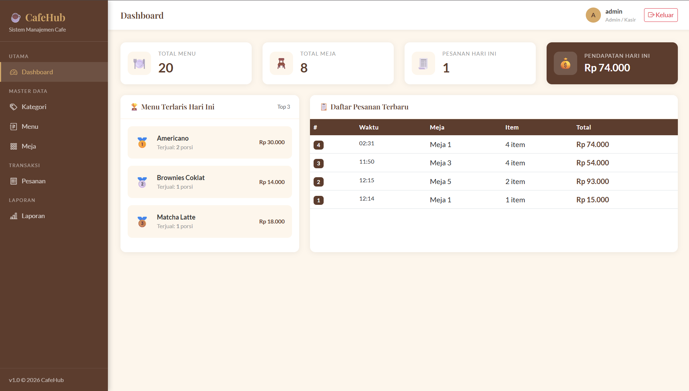

PROJECT 01
//
CAFEHUB

WEB DEVELOPMENT · DATABASE
CafeHub
A database-driven cafe management web application developed with PHP Native, MySQL, and Bootstrap. The project focuses on practical web development, relational database management, and SQL-based data operations.
[ DEVELOPMENT HIGHLIGHTS ]
- Implemented CRUD operations for core application data
- Designed and managed relational database structures
- Applied SQL operations including JOIN, GROUP BY, COUNT, and SUM
PHP
MySQL
Bootstrap
HTML
CSS